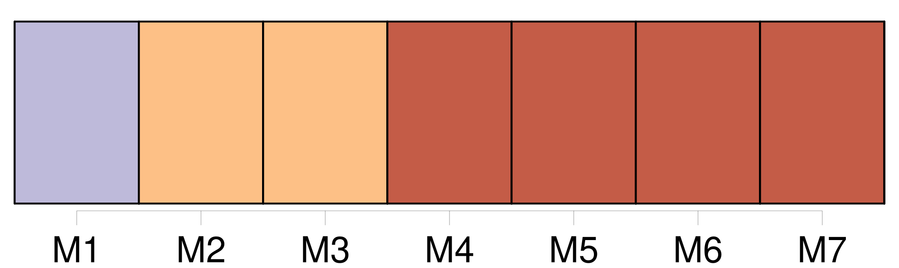
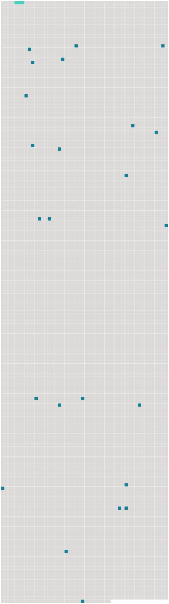

Longueur nb maillons : 25 mentions |
  |
Sur la route, [Marthe et moi] marchions en tête. [34 phrases]
J'étais heureux qu'il se fit un secret entre [nous] , et moi, timide, me sentais déjà tyrannique avec elle. J'étais fier aussi d'être préféré à la campagne, car [nous] n'avions pas encore fait allusion au décor de [notre] promenade. [6 phrases] Je croyais avoir des raisons profondes, et pensais qu'après tout ce qui s'était passé, une conversation tellement en dehors de [nos] inquiétudes communes ne pourrait que rompre le charme. [1 phrases] C'était d'ailleurs vrai, simplement, je le sus dans la suite, parce que Marthe avait faussé [notre] conversation dans le même sens que moi. [33 phrases] Je me promettais bien cet effort de volonté de ne pas venir la voir avant le jour de [notre] rendez -vous. [25 phrases] [Nous] arrivions à Henri Iv, et, ne voulant pas la quitter sur ces paroles que je croyais blessantes, je décidai d'entrer en classe une heure plus tard, après le cours de dessin. [2 phrases] [Nous] étions maintenant dans le jardin du Luxembourg ; neuf heures sonnèrent à l'horloge du Sénat. [6 phrases] [Nous] restions immobiles. [4 phrases]
J'en augurai mal pour [notre] entente. [19 phrases] [Notre] projet, lors de la première rencontre, d'aller à une académie de dessin ; le mensonge du téléphone qu'elle répéterait, ce soir, à ses parents, mensonge auquel s'ajouterait celui des roses, m'étaient des faveurs plus douces qu'un baiser. [27 phrases]
Je devinai que dans quelques jours [nous] les raillerions [ensemble] [9 phrases]
Je représentai à Marthe combien ces murs roses gâcheraient les meubles simples que « [nous] avions choisis », et, reculant encore devant le scandale, lui conseillai de faire peindre les murs de sa chambre à la chaux! [132 phrases] Je revins tous les soirs ; je ne pensai même pas à la prier de me montrer sa chambre, encore moins à lui demander comment Jacques trouvait [nos] meubles.
Je ne souhaitais rien d'autre que ces fiançailles éternelles, [nos] corps étendus près de la cheminée, se touchant l'un l'autre, et moi, n'osant bouger, de peur qu'un seul de mes gestes suffît à chasser le bonheur. [3 phrases] [Nous] nous taisions. [1 phrases] Je me sentais tellement près de Marthe, avec la certitude que [nous] pensions en même temps aux mêmes choses, que lui parler m'eût semblé absurde, comme de parler haut quand on est seul. [61 phrases] Elle ne disait plus qu'il ne fallait pas [nous] revoir ; au contraire, elle était triste à la pensée que [nous] allions nous quitter dans quelques instants. [23 phrases] [Nous] lisions [ensemble] à la lueur du feu. [29 phrases] Dès le début de [notre] amour, Marthe m'avait donné une clef de son appartement, afin que je n'eusse pas à l'attendre dans le jardin, si, par hasard, elle était en ville. [46 phrases] Je pris la clef qu' [on] laissait toujours dans la boîte aux lettres. |
 |
La ressource peut être téléchargée sur la page Ortolang
Si vous avez des questions ou vous voyez des erreurs, merci d'envoyer un mail à silvia.federzoni89@gmail.com
Site développé par S. Federzoni (contact)